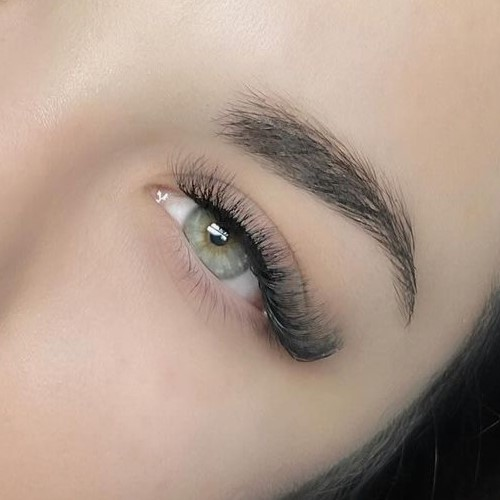

Nuestros servicios
Efecto Rimmel
Elegidas por muchas ya que aportan un look intenso sin llevar maquillaje. Varía su cantidad de pestañas acorde a cada una ✨.

Tecnológicas
Esta técnica es un sí definitivo!. Duran más (mantenimiento cada 20 a 25 días) y se hacen en menos tiempo que las tradicionales.
Volumen 2D a 5D
Las preferidas ✨. Se agregan entre 2 a 5 pelos por pestañas para un resultado más voluminoso.
Lifting
La mejor opción para aquellas que les da pereza tener los cuidados y mantenimientos que requieren las extensiones de pestañas. El lifting NO requiere de mantenimiento! Duración 6 a 8 semanas